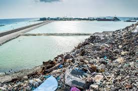
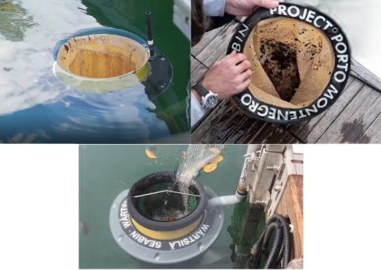

A poluição por plásticos nos oceanos
é um dos maiores problemas ambientais.
Todos os anos, milhões de toneladas de plástico acabam no mar,
vindas principalmente de lixo descartado de forma inadequada em cidades,
rios e zonas costeiras.
A quantidade de lixo que é jogado no mar
é um numero muito grande, e que acaba afetando grande parte da vida marinha
e do proprio ambiente ao redor, então precisamos tentar encontrar
uma forma de reduzir este lixo e acabar com que joga ele.

As principais soluções incluem a redução do uso de plásticos descartáveis, o aumento da reciclagem, políticas públicas mais rigorosas e a conscientização da população sobre o descarte correto do lixo. Com a ajuda da tecnologia, podemos criar um robô que recolha os lixos da beira do mar, evitando que uma grande quantidade de resíduos seja descartada dentro do oceano.
A ideia será realizar um site onde contenha todas as informações sobre como podemos realizar o descarte adequado e o que acontece quando o plástico vai para
o mar. No final terá um quiz onde a pessoa vai testar os conhecimentos dela sobre o tema.
